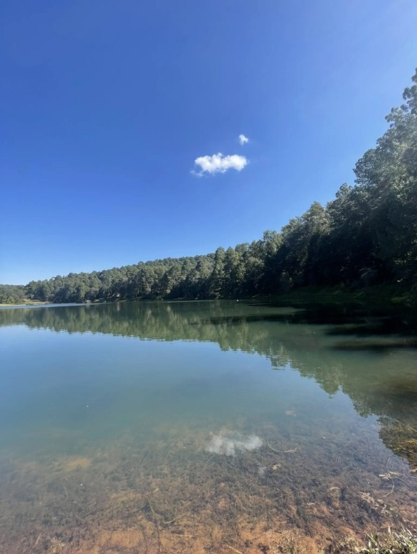
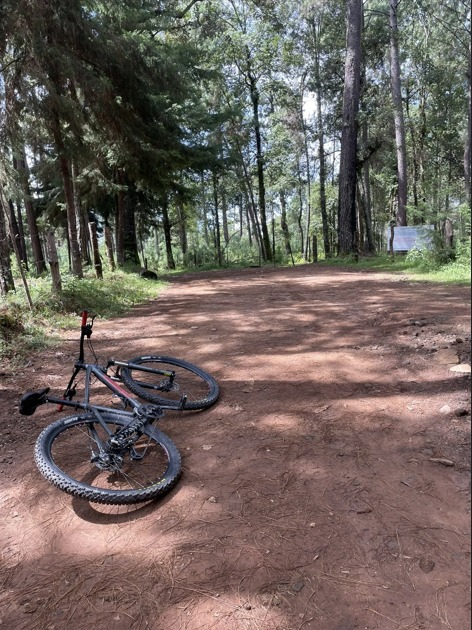

Es un pequeño cuerpo de agua natural alimentado principalmente por las lluvias. Está rodeado de árboles y vegetación de bosque. Su paisaje se caracteriza por el ambiente tranquilo y el reflejo de los árboles en el agua. Es un atractivo natural que ha comenzado a recibir más visitantes. Se encuentra en una zona montañosa y boscosa.
La zona es conocida por sus paisajes y recorridos de naturaleza. Se realizan visitas para contemplar el entorno, tomar fotografías y recorrer los caminos de montaña. También se ha dado a conocer como destino de ciclismo de montaña. Importancia natural: La Laguna Negra es importante por formar parte del entorno natural de Valle de Bravo. Su vegetación y su cuerpo de agua contribuyen al paisaje y al equilibrio ambiental de la región. Es importante evitar tirar basura y contaminar el agua.

Es una región que conserva espacios naturales alejados de la zona urbana. En sus alrededores se encuentra la Laguna Negra. Actividades y atractivos: En esta región se pueden encontrar paisajes apropiados para la fotografía, caminatas y recorridos por caminos rurales. También es conocida por las rutas de ciclismo de montaña. Importancia ambiental y turística: Pinal del Marquesado forma parte de la riqueza natural de Valle de Bravo. Sus bosques son importantes porque ayudan a conservar la biodiversidad, proteger el suelo y mantener el equilibrio de los ecosistemas. Además, sus paisajes representan una oportunidad para desarrollar turismo de naturaleza responsable.
